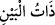
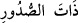
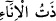

hüküm ve idaresinin O’na (a.s.) ait olması sebebiyledir.
“O halde siz (gerçek) müminler iseniz” yani “Zikredilecek şu üç emre gerçekten
inanan kimseler iseniz” demektir. Buradaki imandan maksat kâmil imandır. Çünkü
imanın aslı, âyette sayılan hususlara riâyet etmeye bağlı değildir. Bilakis iman, sadece
Allah ve Rasûlü’nün hükmünü kabul edip itâat ederek ve onun hak olduğuna inanarak
gerçekleşir.
Ganimetlerin durumu Allah ve Rasûlüne ait olunca “Allah’dan korkun” ve bu konuda
O’nun gazabını gerektirecek yaptığınız tartışmalardan ve ihtilaftan sakının. “Aranızı
düzeltin.” “”, insanlar arasında meydana gelen durumlardır. Nitekim “” sadırlarda gizli duran his ve düşüncelerdir. “” ise bir kabın içine
konan yiyecek veya içecek şeydir. Bir şey içinde bulunan, o şeyle iç içe olduğundan
onun sahibi olmuş olur.
Yani, Allah’ın size rızık olarak verdiği ve ihsan ettiği şeyleri paylaşarak ve yardımda
bulunarak aranızda meydana gelen durumları ıslâh ediniz. Böyle buyurulmasının sebebi
şudur: Bedir’de bizzat savaşanlar, ganimetlerin kendilerine ait olduğunu söylemişler,
sancakların yanında kalan yaşlı ve zayıflarla eşit tutulmamalarını istemişlerdi.
Ubâde b. Sâmit der ki: Bu âyet, biz Bedir ashabı ganimet konusunda ihtilâf ettiğimiz
zaman indi. Bu konudaki ihtilâfımız pek kötü oldu. Allah bu sebeple ganimeti elimizden
alıp Rasûlü’ne tahsis etti. Rasûlullah da onu müslümanlar arasında eşit olarak
paylaştırdı.
Emirlerine uymak, nehiylerinden kaçınmak suretiyle “Allah ve Rasûlüne itaat edin.”
Eğer kâmil iman sahibi kimselerseniz bu üç hususa dikkat edin. Çünkü imanın kemali bu
üç özellik etrafında döner.
Bilesin ki çok soru sormak bıkkınlık verir. Bu sebeple Rasûlullah (s.a.v.): “Allah
Teâlâ size annelere itaatsizlik etmeyi, kız çocuklarını diri diri toprağa gömmeyi,
verilmesi gerekeni vermeyip almaya hakkı olmayan şeyi istemeyi haram kılmış; dedi
kodu yapmayı, çok soru sormayı ve malı israf etmeyi de çirkin görmüştür.”[1]
buyurmuştur.
Bu hadis-i şerifte şu hususlar dile getirilmiştir:
1. Anne babaya karşı gelmek yasaklanmıştır. Çünkü anne-babaya karşı gelmek büyük
günahlardandır. Hadiste sadece annenin zikredilmesi, anne babadan birinin anılması
yeterli görüldüğü içindir. Tıpkı bir âyette “Allah ve Resulü, kendisini hoşnud
etmeleri için daha uygundu.” (et-Tevbe, 9/62) buyurulup “kendilerini” denilmemesi
gibi. Ya da hakkı daha çok ve hizmeti daha fazla olduğu için sadece anne zikredilmiştir.
2. Kız çocuklarını diri diri toprağa gömmek yasaklanmıştır. Bu cahiliyye döneminde
yapılan bir işti. O zaman birinin oğlu olduğunda ona dokunmaz, yaşatırdı. Kızı
olduğunda ise diri diri toprağa gömerdi. Fakirlik korkusu ile kendilerinden utancı ve
izzet-i nefse dokunacak şeyleri uzaklaştırma arzusu onları böyle yapmaya sevketmiştir.
3. “Verilmesi gerekeni vermemek”, yapılması gerekli (vâcib) ve güzel olan